For Your Eyes Only (1981) |
||||
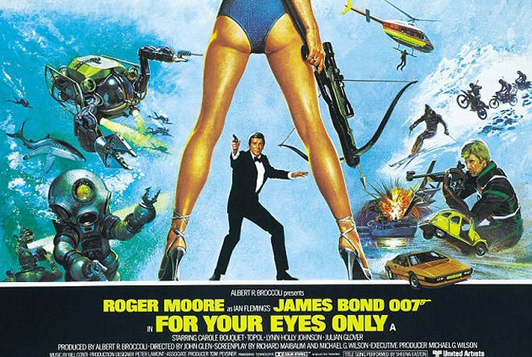 |
||||
Directed by |
- |
John Glen | ||
Produced by |
- |
Albert R. Broccoli | ||
Screenplay by |
- |
Michael G. Wilson |
||
Cinematography |
- |
Alan Hume |
||
Edited by |
- |
John Grover | ||
Production Designer |
- |
Peter Lamont | ||
Production Company |
- |
Eon Productions | ||
Distributed by |
- |
United Artists | ||
Release date |
- |
24 June 1981 | ||
Running time |
- |
127 minutes | ||
Theme Song |
- |
"For Your Eyes Only" (Bill Conti and Michael Leeson) | ||
Sung by |
- |
Sheena Easton | ||
Music |
- |
Bill Conti | ||
Title Sequence |
- |
Maurice Binder | ||
Budget |
- |
$28 million | ||
Box office |
- |
$195.3 million | ||
Cast |
||||
Roger Moore |
- |
James Bond | ||
Carole Bouquet |
- |
Melina Havelock: The daughter of marine archaeologists who are murdered while tracking down the ATAC's whereabouts. Bouquet had auditioned for the role of Holly Goodhead in Moonraker, but was unsuccessful. | ||
Julian Glover |
- |
Aristotle Kristatos: Initially shown as an ally, later as the main villain. A smuggler planning to expand his fortune by selling the ATAC to the KGB. Glover had been shortlisted as a possible Bond for Live and Let Die, eventually losing out to Moore. | ||
Chaim Topol (credited as "Topol") |
- |
Milos Columbo: Kristatos' former smuggling partner who assists Bond in his mission. Named after Gioacchino Colombo, the Ferrari engine designer, specifically Ferrari 125, which Fleming admired. | ||
Lynn-Holly Johnson |
- |
Bibi Dahl: An ice-skating prodigy who is training with the financial support of Kristatos. Johnson was an ice skater before turning to acting, and achieved second place at the novice level of the 1974 United States Figure Skating Championships. | ||
Jill Bennett |
- |
Jacoba Brink: Bibi's skating coach. | ||
Michael Gothard |
- |
Emile Leopold Locque: A Belgian hired killer and associate of Kristatos. | ||
John Wyman |
- |
Erich Kriegler: An East German Olympic class biathete and Kristatos' henchman/KGB contact. | ||
Desmond Llewelyn |
- |
Q: The head of MI6's technical department. | ||
Jack Hedley |
- |
Sir Timothy Havelock: A marine archaeologist hired by the British Secret Service to secretly locate the wreck of St Georges. | ||
Toby Robins |
- |
Iona Havelock: Melina's mother and wife of Sir Timothy. | ||
Lois Maxwell |
- |
Miss Moneypenny: M's secretary. | ||
Geoffrey Keen |
- |
Sir Frederick Gray: The British Minister of Defence, a minister in the British government. The role, along with Chief of Staff Bill Tanner, was used to brief Bond in place of M, following the death of Bernard Lee. | ||
James Villiers |
- |
MI6 Chief of Staff Bill Tanner: The role of Tanner first appeared on film in The Man with the Golden Gun, although in an un-credited capacity. Villiers presumed he would play the role of M in subsequent films and was disappointed not to be asked; the producers thought him too young for the role and wanted an actor in his 70s. | ||
John Moreno |
- |
Luigi Ferrara: 007's MI6 contact in northern Italy. | ||
Walter Gotell |
- |
General Gogol: Head of the KGB. | ||
Eva Reuber-Staier |
- |
Rublevich: General Gogol's secretary. | ||
Cassandra Harris |
- |
Countess Lisl von Schlaf: Columbo's mistress. At the time of filming Harris was married to future Bond actor Pierce Brosnan. | ||
Stefan Kalipha |
- |
Hector Gonzales: A Cuban hitman hired by Kristatos to kill the Havelocks. | ||
Jack Klaff |
- |
Apostis: One of Kristatos's henchmen and chauffeur. | ||
Charles Dance |
- |
Claus: an associate of Locque. The role was early in Dance's career; in 1989 he would play Ian Fleming in Anglia Television's Goldeneye: The Secret Life of Ian Fleming, a dramatised portrayal of the life of Ian Fleming. | ||
Alkis Kritokos |
- |
Santos: One of Kristatos's henchmen. | ||
Stag Theodore |
- |
Nikos: One of Kristatos's henchmen. | ||
Graham Crowden |
- |
First Sea Lord. | ||
Noel Johnson |
- |
Vice Admiral. | ||
William Hoyland |
- |
McGregor: Crew member on the St Georges. | ||
Paul Brooke |
- |
Bunky: Loses all his money to Bond at the Casino in Corfu. | ||
Fred Bryant |
- |
Vicar. | ||
Robbin Young |
- |
Girl in Cortina Flower Shop. | ||
Janet Brown |
- |
Margaret Thatcher: who appears in the closing scene alongside John Wells as Denis. | ||
John Hollis |
- |
"Bald villain in wheelchair" (voiced by Robert Rietti): The character appears in the pre-credits sequence and is both unnamed and uncredited. The character contains a number of characteristics of Ernst Stavro Blofeld, but could not be identified as such because of the legal reasons surrounding the Thunderball controversy with Kevin McClory claiming sole rights to the Blofeld character, a claim disputed by Eon. | ||
Bob Simmons |
- |
Gonzales' henchman: He falls victim to Bond's exploding Lotus. Simmons had previously portrayed Bond in the gun barrel sequences in the first three films and SPECTRE agent Colonel Jacques Bouvar in Thunderball. |
||
| The assistant director for the Italian locations in The Spy Who Loved Me, Victor Tourjansky, had a cameo as a man drinking his wine as Bond's Lotus emerges from the beach. And, as an in-joke, he returned in similar appearances in another two Bond films shot in Italy: Moonraker and For Your Eyes Only. | ||||
Synopsis |
||||
The British information gathering vessel St Georges, which holds the Automatic Targeting Attack Communicator (ATAC), the system used by the Ministry of Defence to communicate with and coordinate the Royal Navy's fleet of Polaris submarines, is sunk after accidentally trawling an old naval mine in the Ionian Sea. MI6 agent James Bond is assigned by the Minister of Defence, Sir Frederick Gray and MI6 Chief of Staff, Bill Tanner, to retrieve the ATAC before the Soviets, as the transmitter could order attacks by the submarines' Polaris ballistic missiles. The head of the KGB, General Gogol, has also learned of the fate of the St Georges and already notified his contact in Greece. A marine archaeologist, Sir Timothy Havelock, who had been asked by the British to secretly locate the St Georges, prepares to send his report in, but before the task is completed, Havelock is killed with his wife Iona by a Cuban hitman, Hector Gonzales. Bond goes to Spain to find out who hired Gonzales. While spying on Gonzales at his villa, Bond is captured by Gonzales' henchmen, but manages to escape as Gonzales is killed by a crossbow bolt while diving into his swimming pool. On the grounds, he finds the assassin was Melina Havelock, the daughter of Sir Timothy, and the pair escape. With the help of Bond, Q uses computerized technology to identify the man Bond saw paying off Gonzales as Emile Leopold Locque a former enforcer in the Brussels underworld, and then goes to Locque's possible base in Cortina, Italy. There, Bond meets his contact, Luigi Ferrara, and Aris Kristatos, a well-connected Greek businessman, shipping tycoon, and intelligence informant. Kristatos, who tells Bond that Locque is employed by Milos Columbo, known as "the Dove" in the Greek underworld, Kristatos' former resistance partner during the Second World War. After Bond goes with Kristatos' protégée, figure skater Bibi Dahl, to a biathlon course, a group of men, which includes East German biathlete Eric Kriegler, chases Bond, trying to kill him. Bond escapes and then goes with Ferrara to bid Bibi farewell in an ice rink, where he fends off another attempt on his life by hoods in ice hockey gear. Ferrara is killed in Bond's car, with a dove pin in his hand. Bond then travels to Corfu in pursuit of Columbo. There, at the casino, Bond meets Kristatos and asks how to meet Columbo, not knowing that Columbo's men are secretly recording their conversation. After Columbo and his mistress, Countess Lisl von Schlaf, argue, Bond offers to escort her home with Kristatos' car and driver. The two then spend the night together. In the morning Lisl and Bond are ambushed by Locque and Lisl is killed. Bond is captured by Columbo's men before Locque can kill him; Columbo then tells Bond that Locque was actually hired by Kristatos, who is working for the KGB to retrieve the ATAC. Bond accompanies Columbo and his crew on a raid on one of Kristatos' opium-processing warehouse in Albania, where Bond uncovers naval mines similar to the one that sank the St Georges, suggesting that it was not an accident. When the base is destroyed, Bond chases Locque and pushes his car off a cliff, killing Locque in the process. Afterwards, Bond meets Melina, and they recover the ATAC from the wreckage of the St Georges, but Kristatos is waiting for them when they surface and he takes the ATAC. After getting dragged over a coral reef in shark-infested waters and survive the ordeal, they discover Kristatos' rendezvous point when Melina's parrot repeats the phrase "ATAC to St Cyril's". With the help of Columbo and his men, Bond and Melina break into St Cyril's, an abandoned mountaintop monastery. As Columbo is confronting Kristatos, Bond uses a spiked candelabra to force Kriegler headlong through a window and Kriegler takes a deadly plummet off the mountain. Bond retrieves the ATAC system and prevents Melina from killing Kristatos after he surrenders. Kristatos tries to kill Bond with a hidden flick knife, but is killed by a knife thrown by Columbo; Gogol arrives by helicopter to collect the ATAC, but Bond throws it off the cliff. Bond and Melina later spend a romantic evening aboard her father's yacht when he receives a call from the Prime Minister. |
||||
Casting |
||||
Roger Moore had originally signed a three-film contract with Eon Productions, which covered his first three appearances up to The Spy Who Loved Me. Subsequent to this, the actor negotiated contracts on a film-by-film basis. Uncertainty surrounding his involvement in For Your Eyes Only considering his possible retirement due to his age, led to other actors being considered to take over, including Lewis Collins, known in the UK for his portrayal of Bodie in The Professionals; Ian Ogilvy, like Moore very known by his role in Return of the Saint; Michael Billington, who previously appeared in The Spy Who Loved Me as Agent XXX's ill-fated lover, (Billington's screen test for For Your Eyes Only was one of the five occasions he auditioned for the role of Bond) and Michael Jayston, who had appeared as the eponymous spy in the British TV series of Quiller (Jayston eventually played Bond in a BBC Radio production of You Only Live Twice in 1985). Timothy Dalton was strongly considered but Dalton declined, as he disliked the direction the series was taking at the time. Eventually, this came to nothing as Moore agreed to play Bond once again. Bernard Lee died on 16 January 1981, after filming began on For Your Eyes Only, but before he could film his scenes as M, the head of MI6, as he had done in the previous eleven films of the series. Out of respect, no new actor was hired to assume the role and, instead, the script was re-written so that the character is said to be on leave, letting Chief of Staff Bill Tanner take over the role as acting head of MI6 and briefing Bond alongside the Minister of Defence. Chaim Topol was cast following a suggestion by Albert Broccoli's wife Dana, while Julian Glover joined the cast as the producers felt he was stylish - Glover was even considered to play Bond at some point, but Michael G. Wilson stated that "when we first thought of him he was too young, and by the time of For Your Eyes Only he was too old". Carole Bouquet was a suggestion of United Artists publicist Jerry Juroe, and after Glen and Broccoli saw her in That Obscure Object of Desire, they went to Rome to invite Bouquet for the role of Melina. In the 1970s, John Wyman (Erich Kriegler) played "The Mighty Ajax" in a series of UK television commercials for Ajax cleaning products. |
||||
Filming |
||||
For Your Eyes Only marked a change in the make up of the production crew: John Glen was promoted from his duties as a film editor to director, a position he would occupy for four subsequent films. The transition in directors resulted in a harder-edged directorial style, with less emphasis on gadgetry and large action sequences in huge arenas (as was favoured by Lewis Gilbert). Emphasis was placed on tension, plot and character in addition to a return to Bond's more serious roots, whilst For Your Eyes Only "showed a clear attempt to activate some lapsed and inactive parts of the Bond mythology." The film was also a deliberate effort to bring the series more back to reality, following the success of Moonraker in 1979. As co-writer Michael G. Wilson pointed out, "If we went through the path of Moonraker things would just get more outlandish, so we needed to get back to basics". To that end, the story that emerged was simpler, not one in which the world was at risk, but returning the series to that of a Cold War thriller; Bond would also rely more on his wits than gadgets to survive. Glen decided to symbolically represent it with a scene where Bond's Lotus blows itself up and forces 007 to rely on Melina's more humble Citroën 2CV. Since Ken Adam was busy with Pennies from Heaven, Peter Lamont, who had worked in the art department since Goldfinger, was promoted to production designer. Following a suggestion of Glen, Lamont created realistic scenery, instead of the elaborate set pieces for which the series had been known. Production of For Your Eyes Only began on 2 September 1980 in the North Sea, with three days shooting exterior scenes with the St Georges. The interiors were shot later in Pinewood Studios, as well as the ship's explosion, which was done with a miniature in Pinewood's tank on the 007 Stage. On 15 September principal photography started on Corfu at the Villa Sylva at Kanoni, above Corfu Town, which acted as the location of the Spanish villa. Many of the local houses were painted white for scenographic reasons. Glen opted to use the local slopes and olive trees for the chase scene between Melina's Citroën 2CV and Gonzales' men driving Peugeot 504s. The scene was shot across twelve days, with stunt driver Rémy Julienne - who would remain in the series up until GoldenEye - driving the Citroën. Four 2CVs were used, with modifications for the stunts – all had more powerful flat-four engines, and one received a special revolving plate on its roof so it could get turned upside down. In October filming moved to other Greek locations, including Metéora and the Achilleion. In November, the main unit moved to England, which included interior work in Pinewood, while the second unit shot underwater scenes in The Bahamas. On 1 January 1981, production moved to Cortina d'Ampezzo in Italy, where filming wrapped in February. Since it was not snowing in Cortina d'Ampezzo by the time of filming, the producers had to pay for trucks to bring snow from nearby mountains, which was then dumped in the city's streets. Many of the underwater scenes, especially involving close-ups of Bond and Melina, were faked on a dry soundstage. A combination of lighting effects, slow-motion photography, wind, and bubbles added in post-production, gave the illusion of the actors being underwater. Actress Carole Bouquet reportedly had a pre-existing health condition that prevented her from performing underwater stunt work. Aquatic scenes were done by a team led by Al Giddings, who had previously worked on The Deep, and filmed in either Pinewood's tank on the 007 Stage or an underwater set built in the Bahamas. Production designer Peter Lamont and his team developed two working props for the submarine Neptune, as well as a mock-up with a fake bottom. Roger Moore was reluctant to film the scene of Bond kicking a car, with Locque inside, over the edge of a cliff, saying that it "was Bond-like, but not Roger Moore Bond-like." Michael G. Wilson later said that Moore had to be persuaded to be more ruthless than he felt comfortable. Wilson also added that he and Richard Maibaum, along with John Glen, toyed with other ideas surrounding that scene, but ultimately everyone, even Moore, agreed to do the scene as originally written. For the Meteora shoots, a Greek bishop was paid to allow filming in the monasteries, but the uninformed Eastern Orthodox monks were mostly critical of production rolling in their installations. After a trial in the Greek Supreme Court, it was decided that the monks' only property were the interiors - the exteriors and surrounding landscapes were from the local government. In protest, the monks remained shut inside the monasteries during the shooting, and tried to sabotage production as much as possible, hanging their washing out of their windows and covering the principal monastery with plastic bunting and flags to spoil the shots, and placing oil drums to prevent the film crew from landing helicopters. The production team solved the problem with back lighting, matte paintings, and building both a similar scenographic monastery on a nearby unoccupied rock, and a monastery set in Pinewood. Roger Moore said he had a great fear of heights, and to do the climbing in Greece, he resorted to moderate drinking to calm his nerves. Later in that same sequence, Rick Sylvester, a stuntman who had previously performed the pre-credits ski jump in The Spy Who Loved Me, undertook the stunt of Bond falling off the side of the cliff. The stunt was dangerous, since the sudden rope jerk at the bottom could be fatal. Special effects supervisor Derek Meddings developed a system that would dampen the stop, but Sylvester recalled that his nerves nearly got the better of him: "From where we were [shooting], you could see the local cemetery; and the box [to stop my fall] looked like a casket. You didn't need to be an English major to connect the dots." The stunt went off without a problem. Bond veteran cameraman and professional skier Willy Bogner, Jr. was promoted to director of a second unit involving ski footage. Bogner designed the ski chase on the bobsleigh track of Cortina d'Ampezzo hoping to surpass his work in both On Her Majesty's Secret Service and The Spy Who Loved Me. To allow better filming, Bogner developed both a system where he was attached to a bobsleigh, allowing to film the vehicle or behind it, and a set of skis that allowed him to ski forwards and backwards to get the best shots. In February 1981, on the final day of filming the bobsleigh chase, one of the stuntmen driving a sleigh, 23-year-old Paolo Rigon, was killed when he became trapped under the bob. The pre-credits sequence used a church in Stoke Poges as a cemetery, while the helicopter scenes were filmed at the abandoned Beckton Gas Works in London.The gas works were also the location for some of Stanley Kubrick's 1987 film, Full Metal Jacket. Director John Glen got the idea for the remote-controlled helicopter after seeing a child playing with an RC car. Since flying a helicopter through a warehouse was thought to be too dangerous, the scene was shot using forced perspective. A smaller mock-up was built by Derek Meddings' team closer to the camera that the stunt pilot Marc Wolff flew behind and this made it seem as if the helicopter was entering the warehouse. The footage inside the building was shot on location, though with a life-sized helicopter model which stood over a rail. Stuntman Martin Grace stood as Bond when the agent is dangling outside the flying helicopter, while Roger Moore himself was used in the scenes inside the model. |
||||
Additional Posters |
||||
|
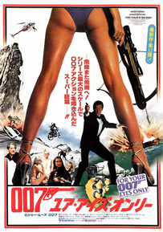 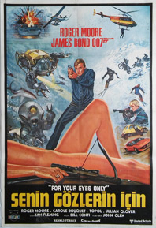 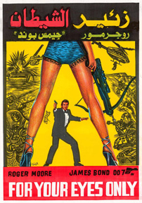 |
|
||
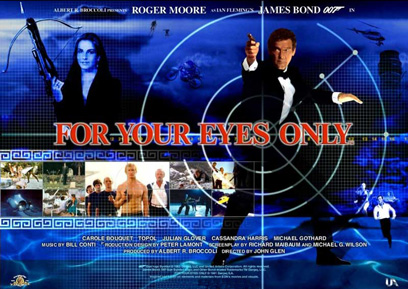 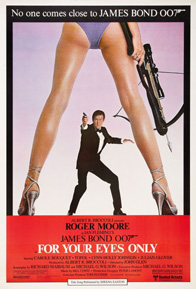 |
||||
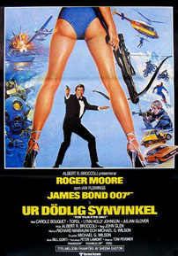 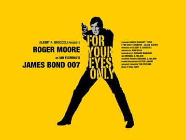 |
||||
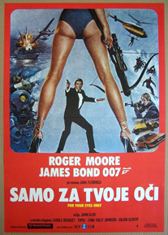 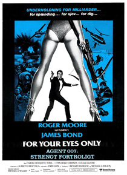 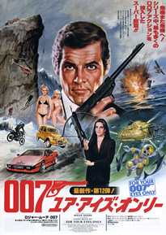 |
||||